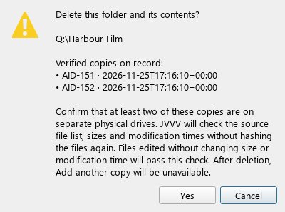

Delete the original from Q:
Use this when you have finished archiving a project to two separate drives and want the space back on Q:. The queue never deletes the original automatically.
1. Select the archived project
In the catalogue, right-click the project folder under either archive drive. Choose Delete original from Q:\…. You can also right-click the project in Queue Manager → Completed. You need two verified copies of this saved project on distinct archive volumes. Finish or remove any outstanding copy tasks for the source first.
2. Check the source and the drives
Read the full source path and the list of verified drives. A mapped Q: drive can appear under its network path. Confirm that you still have two copies on separate physical drives. Two partitions on one HDD give you only one physical copy. The dates show when JVVV verified each copy; older records may have no date. Offline drives can stay unplugged.
Choose Cancel to keep the original, or Yes to permanently delete it after the checks. This bypasses the Recycle Bin.

3. Wait for “Original deleted”
JVVV compares its latest catalogue listings for the archive drives with the saved project. On Q: it checks the file and folder names, file sizes and modification times. It does not reread the contents to calculate hashes. An edit that kept both the size and modification time will pass. An added or missing file, a link, or a changed file size or time stops the initial check before deletion.
On success, the original folder is gone and Add another copy… is replaced by Original deleted. The archive files, each volume’s hashes, and the record of which volumes were verified remain. JVVV removes the reusable file list and hashes from the live catalogue. Snapshots taken before deletion keep their earlier catalogue records.
If deletion stops partway, JVVV keeps the saved hashes. Read the error, resolve the cause, then choose Resume deletion of original… on the same project. JVVV checks the remaining files before continuing.